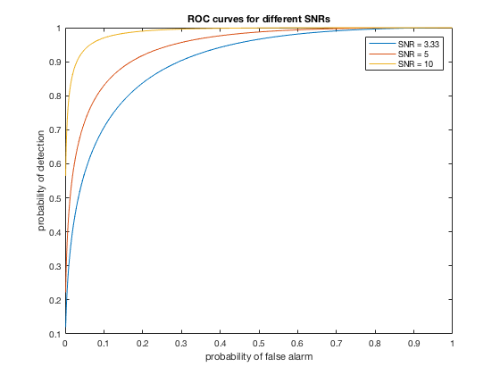
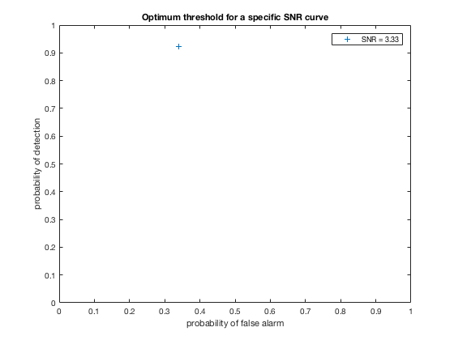
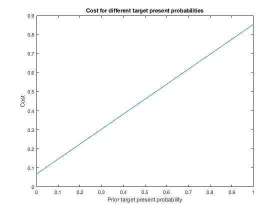
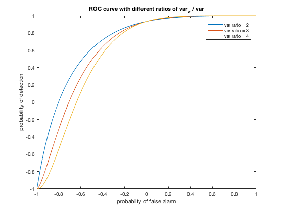

Contents
% Stoch Project III % Weizhe Guo
P1
var = 0.3; % Self_assigned variance detect_val = 1; % Detection value of the target p0 = 0.8; % Probability of the target is not present % a) % The "same variance, different mean" model for Gaussin is appropriate % here. As the wrong result and the correct result are both Gaussin with % different means. noise = normrnd(0, var^0.5,[1,1000]); % Noise matrix target = ones(1,1000) .* binornd(1, 1-p0, [1,1000]) .* detect_val; % target matrix is modeled by bionomial distribution with successful rate of 0.8 receive = noise + target; % In the "same mean, different var" Gaussin model, we just need to compare % the observation with the calculated threshold % Implement the function below to get the threshold thresh = MAP(var,detect_val,p0); % Get the optimal threshold decision = zeros(size(receive)); decision(receive(:) > thresh) = detect_val; % creating a decision matrix; if above threshhold, set it to be 1 err = zeros(1,1000); % Create an 1* 1000 error matrix % If the decision is different from the actual target, we have a wrong % detection. Sum up the number of wrong detections and devide by 1000 to % get the probability of detection error err(decision(:) ~= target(:)) = 1; err_prob = sum(err) / 1000; % The actual probability of error prob_false = 1 - normcdf(thresh, 0, var^0.5); prob_miss = normcdf(thresh, detect_val, var^0.5); err_prob_theory = prob_false * 0.8 + prob_miss * 0.2; % The theoretical probability of error sprintf('The experimental probabilty of error from the detector is %d', err_prob) sprintf('The theoretical probabilty of error is %d', err_prob_theory) % b) [prob_false1, prob_detection1] = ROC_curve(detect_val, var); %SNR = 1/0.3 = 3.33 [prob_false2, prob_detection2] = ROC_curve(detect_val, 0.2); %SNR = 1/0.2 = 5 [prob_false3, prob_detection3] = ROC_curve(detect_val, 0.1); %SNR = 1/0.1 = 10 figure plot(prob_false1, prob_detection1) hold on plot(prob_false2, prob_detection2) plot(prob_false3, prob_detection3) hold off legend('SNR = 3.33', 'SNR = 5', 'SNR = 10') xlabel('probability of false alarm') ylabel('probability of detection') title('ROC curves for different SNRs') % c) % Since missing the target is 10 times worse than false alarm, the cost % structure has to change, which is revealed in the ROC_dot function [false_point, detect_point] = ROC_dot(detect_val, var, p0); % choose SNR = 1/0.3 = 3.33 figure plot(false_point, detect_point,'+') legend('SNR = 3.33') xlim([0,1]) ylim([0,1]) xlabel('probability of false alarm') ylabel('probability of detection') title('Optimum threshold for a specific SNR curve') % d) % choose the case that SNR = 3.33 part1 = linspace(0,1,100); c_miss = 10; c_falseAlarm = 1; expected_cost = c_miss * part1 + c_falseAlarm.*((1-p0)*ones(1,100)).*false_point - c_miss .* part1 .* detect_point; figure plot(part1, expected_cost) xlabel('Prior target present probability') ylabel('Cost') title('Cost for different target present probabilities') % e) p0 = 0.8; var_z = 0.6; % var_z / var = 0.6/0.3 = 2 var_z1 = 0.9; % var_z1/ var = 0.9/0.3 = 3 var_z2 = 1.2; % var_z2/ var = 1.2/0.3 = 4 noise_present = normrnd(0, var^0.5,[1,1000]); noise_notPresent = normrnd(0, var_z^0.5,[1,1000]); target2 = ones(1,1000) .* binornd(1, 1-p0, [1,1000]); % 1 indicadte target is present target2_not = ones(1,1000) - target2; % Inverse of target2, 1 indicate target is not present received = ones(1,1000) .* detect_val + target2 .* noise_present + target2_not .* noise_notPresent; [decision2, thresh2] = MAP2(var, var_z, p0, received, detect_val); err2 = zeros(1,1000); err2(decision2(:) ~= target2(:)) = 1; prob_err2 = sum(err2) / 1000; prob_false_prime = 1 - 2 * normcdf(-1*thresh2^0.5, 0, var_z^0.5); prob_miss_prime = 2* normcdf(-1*thresh2^0.5, 0, var^0.5); prob_err_theory2 = prob_false_prime * 0.8 + prob_miss_prime * 0.2; sprintf('The experimental probabilty of error from the detector for the new model is %d', prob_err2) sprintf('The theoretical probabilty of error for the new model is %d', prob_err_theory2) [prob_false_prime1, prob_detection_prime1] = ROC_curve2(detect_val, var, var_z); [prob_false_prime2, prob_detection_prime2] = ROC_curve2(detect_val, var, var_z1); [prob_false_prime3, prob_detection_prime3] = ROC_curve2(detect_val, var, var_z2); figure plot(prob_false_prime1, prob_detection_prime1); hold on plot(prob_false_prime2, prob_detection_prime2); plot(prob_false_prime3, prob_detection_prime3); xlabel('probabilty of false alarm') ylabel('probability of detection') title('ROC curve with different ratios of var_z / var') legend('var ratio = 2', 'var ratio = 3', 'var ratio = 4')   
P2
Thanks for Alex for helping me on this problem
iris=load("iris.mat"); X=iris.features; y=iris.labels; ind = randperm(size(X,1)); shuf_X=X(ind,:); shuf_y=y(ind); X_test=shuf_X(1:size(X,1)/2,:); X_train=shuf_X(size(X,1)/2+1:end,:); y_test=shuf_y(1:size(X,1)/2); y_train=shuf_y(size(X,1)/2+1:end); % clean up the data and seperate into training set and test set part1=X_train(y_train==1,:); part2=X_train(y_train==2,:); part3=X_train(y_train==3,:); cov1=cov(part1); cov2=cov(part2); cov3=cov(part3); % mu is a four dimensional vector for four features mu1=[mean(part1(:,1)),mean(part1(:,2)),mean(part1(:,3)),mean(part1(:,4))]; mu2=[mean(part2(:,1)),mean(part2(:,2)),mean(part2(:,3)),mean(part2(:,4))]; mu3=[mean(part3(:,1)),mean(part3(:,2)),mean(part3(:,3)),mean(part3(:,4))]; Like=[mvnpdf(X_test,mu1,cov1),mvnpdf(X_test,mu2,cov2),mvnpdf(X_test,mu3,cov3)]; [val,result]=max(Like,[],2); error=y_test~=result; error_sum = sum(error); error_percentage = error_sum/size(y_test,1) conf_matrix = confusionmat(y_test,result)
error_percentage =
0.0533
conf_matrix =
26 0 0
0 24 3
0 1 21
Functions
function thresh = MAP(var, A, p0) eta = p0 / (1 - p0); thresh = A/2 + var * log(eta) / A; end function [p_falseAlarm, p_detection] = ROC_curve(A, var) std = var ^ 0.5; gamma = linspace(-3*std,3*std,1000); p_falseAlarm = ones(1,1000) - normcdf(gamma(:),0,std)'; p_detection = ones(1,1000) - normcdf(gamma(:),A,std)'; end function [false_point, detect_point] = ROC_dot(A, var, p0) std = var ^ 0.5; eta = 1/10 * (p0 / (1 - p0)); gamma = A/2 + var * log(eta) / A; false_point = 1 - normcdf(gamma,0,std); detect_point = 1 - normcdf(gamma,A,std); end function [decision2, thresh2] = MAP2(var_x, var_z, p0, received, A) decision2 = zeros(size(received)); std_z = var_z ^ 0.5; std_x = var_x ^ 0.5; eta = p0 / (1 - p0); thresh2 = 2 * (var_x*var_z/(var_z - var_x)) * log(std_x / std_z * eta); received(:) = received(:) - A; decision2(-1*received(:).^2 > thresh2) = 1; end function [p_FA, p_D] = ROC_curve2(A, var_x, var_z) std_x = var_x ^ 0.5; std_z = var_z ^ 0.5; gamma = linspace(-3*std_z,3*std_z,1000); p_FA = ones(1,1000) - 2 * normcdf(gamma(:),0,std_z)'; p_D = ones(1,1000) - 2 * normcdf(gamma(:),A,std_x)'; end
ans =
'The experimental probabilty of error from the detector is 1.520000e-01'
ans =
'The theoretical probabilty of error is 1.255911e-01'
ans =
'The experimental probabilty of error from the detector for the new model is 2.150000e-01'
ans =
'The theoretical probabilty of error for the new model is 6.888475e-01'